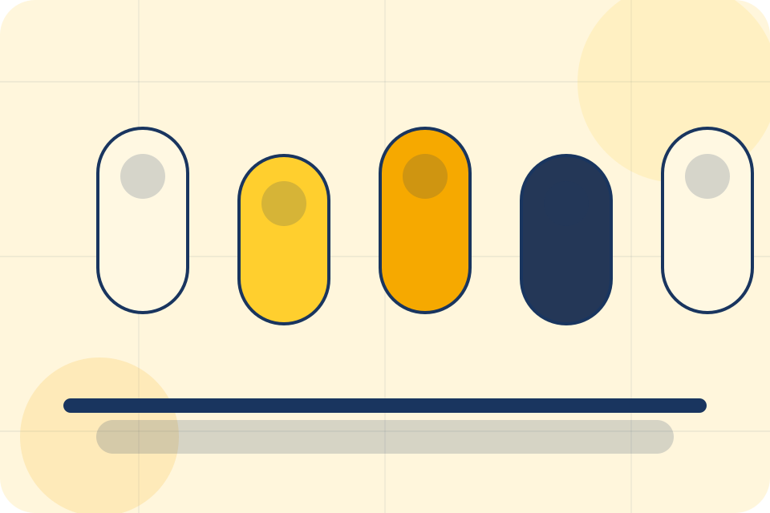
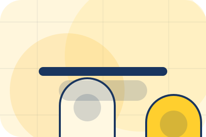
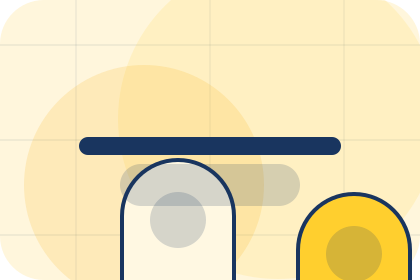
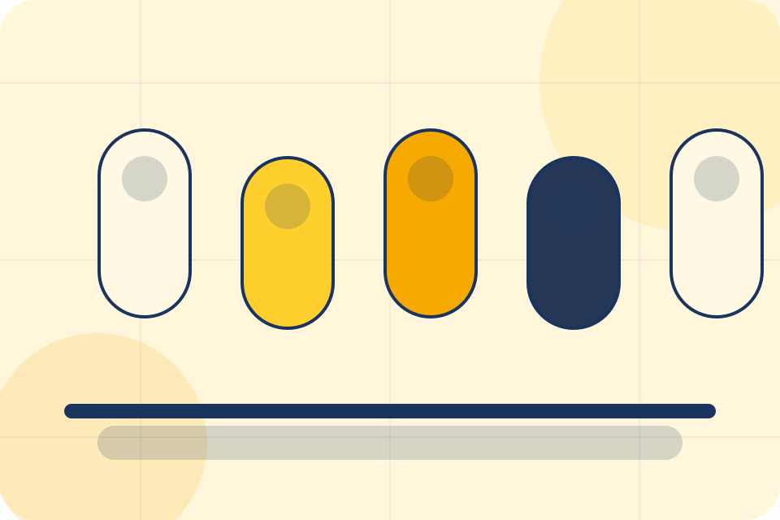
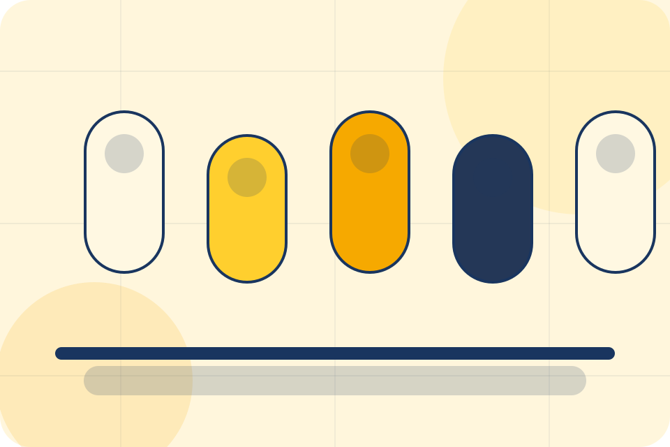
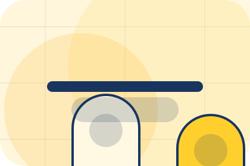
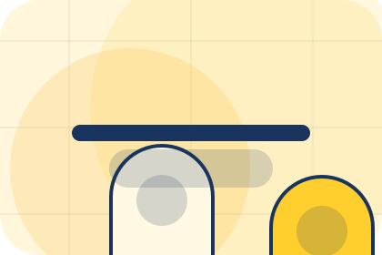
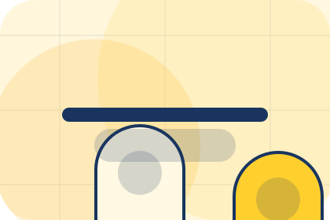
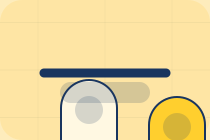

Results / 01
Results by Luma
Results shaped for wellness, personal care & lifestyle services decisions.
Results opens as a clear wellness decision hub: what Luma offers, who it helps, why it matters, and which route to take first.
The first screen combines positioning, proof, primary action, and fast internal navigation, so people can act immediately or compare the rest of the results route with context.
Clear intakeHuman follow-upPractical reassurance
Product routine hero
Choose a starting profile
Select the closest route and Luma keeps the next step, proof, and follow-up expectation aligned with personal improvement and reassurance.

Results / 02
Outcomes
Outcomes shows what changes after the work: clearer decisions, visible progress, and proof points that connect the offer to real outcomes.
The layout connects before-and-after thinking with measured outcomes, making the result easy to scan without promising what the business cannot guarantee.
Explore ResultsLuma structures outcomes around before, after, and a clear next route so visitors can compare the block quickly before they book a consultation.
Book ConsultationResults / 04
Reviews
Reviews shows what changes after the work: clearer decisions, visible progress, and proof points that connect the offer to real outcomes.
The layout connects before-and-after thinking with measured outcomes, making the result easy to scan without promising what the business cannot guarantee.
Explore ResultsBefore
The uncertainty, delay, or missed opportunity visitors bring into reviews.

After
The clearer, safer, or more valuable state Luma is designed to support.

Proof
The visible cue that connects reviews to a believable decision, not a loose claim.
Results / 05
Photos
Photos shows what changes after the work: clearer decisions, visible progress, and proof points that connect the offer to real outcomes.
The layout connects before-and-after thinking with measured outcomes, making the result easy to scan without promising what the business cannot guarantee.
Explore ResultsThe uncertainty, delay, or missed opportunity visitors bring into photos.
The clearer, safer, or more valuable state Luma is designed to support.
The visible cue that connects photos to a believable decision, not a loose claim.


Results / 06
Timeline
Timeline explains the operating sequence so visitors can see how the first request becomes a clear recommendation and follow-up.
The steps are written from the visitor side: what they do first, what Luma clarifies, what they receive, and how support continues.
Explore ResultsStart
How visitors begin this route and what detail is useful at the first step.
Clarify
What Luma reviews, filters, or explains before recommending the next move.
Continue
What the visitor receives afterward, including support, proof, or a handoff to the next page.
Results / 07
Expectations
Expectations shows what changes after the work: clearer decisions, visible progress, and proof points that connect the offer to real outcomes.
The layout connects before-and-after thinking with measured outcomes, making the result easy to scan without promising what the business cannot guarantee.
Explore ResultsBefore
The uncertainty, delay, or missed opportunity visitors bring into expectations.
After
The clearer, safer, or more valuable state Luma is designed to support.
Proof
The visible cue that connects expectations to a believable decision, not a loose claim.
Results / 08
Proof
Proof shows what changes after the work: clearer decisions, visible progress, and proof points that connect the offer to real outcomes.
The layout connects before-and-after thinking with measured outcomes, making the result easy to scan without promising what the business cannot guarantee.
Explore ResultsThe uncertainty, delay, or missed opportunity visitors bring into proof.
The clearer, safer, or more valuable state Luma is designed to support.
The visible cue that connects proof to a believable decision, not a loose claim.
Results / 09
Confidence
Confidence shows what changes after the work: clearer decisions, visible progress, and proof points that connect the offer to real outcomes.
The layout connects before-and-after thinking with measured outcomes, making the result easy to scan without promising what the business cannot guarantee.
Explore Results
Before
The uncertainty, delay, or missed opportunity visitors bring into confidence.

After
The clearer, safer, or more valuable state Luma is designed to support.

Proof
The visible cue that connects confidence to a believable decision, not a loose claim.
Results / 10
Book Consultation
Luma closes the results route with a clear action, a quick reminder of the value, and a low-friction way to book a consultation.
Visitors who are ready can use the primary action. Visitors who are still comparing can scan the section links, proof, and support routes before they book a consultation.
Book ConsultationThe final block keeps the choice simple: act now, compare one more proof route, or send enough detail for a focused response.
Book Consultationpersonal improvement and reassurance
Book Consultation
A routine-first wellness shop with offer strip, product education, rounded capsules, and evidence-led reassurance. Results ends with a direct path to book a consultation, plus enough context for visitors who still need to compare.

Book ConsultationNotes
Information is provided for planning and should be reviewed for the final client, location, and operating rules.